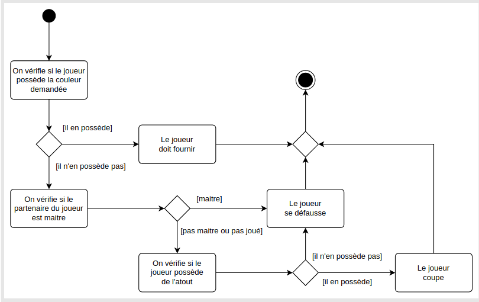

Programmation Orientée Objet
Cette page présente les concepts de la programmation orientée objet, y compris les classes, les objets, l'héritage et le polymorphisme.
Je parie que tu as quelques difficultés avec les diagrammes UML. Pas de pannique, tu n'es pas le seul. Moi même j'ai galéré avec ça. C'est pour ça que je te propose de voir tout ca ici.
Diagramme de cas d'utilisation
Le diagramme de cas d'utilisation (ou use case diagram en anglais) est un type de diagramme UML (Unified Modeling Language) qui sert à modéliser les fonctionnalités principales d’un système du point de vue de ses utilisateurs (appelés acteurs). Il est très utilisé en analyse et conception logicielle pour visualiser ce que fait le système, sans entrer dans les détails techniques.
Les élément de bas d'un diagramme de cas d'utilisation
- Acteur : Un acteur représente un utilisateur ou un système externe qui interagit avec le système. Il peut s'agir d'un utilisateur humain, d'un autre système ou d'une organisation.
- Cas d'utilisation : Un cas d'utilisation représente une fonctionnalité ou un service que le système offre à l'acteur. Il décrit ce que l'acteur peut faire avec le système.
- Relation : Les relations entre les acteurs et les cas d'utilisation sont représentées par des lignes. Elles montrent comment les acteurs interagissent avec le système.
- Association : Une ligne simple qui relie un acteur à un cas d'utilisation, indiquant que l'acteur interagit avec le cas d'utilisation.
- Généralisation : Une flèche avec une pointe ouverte qui indique qu'un acteur ou un cas d'utilisation hérite des caractéristiques d'un autre acteur ou cas d'utilisation.
- Inclusion : Une flèche avec une pointe pleine qui indique qu'un cas d'utilisation inclut un autre cas d'utilisation.
- Extension : Une flèche avec une pointe pleine qui indique qu'un cas d'utilisation peut être étendu par un autre cas d'utilisation.
Exemple d'un site universitaire étudiant
Acteurs :- Étudiant
- Administrateur
- Se connecter
- Consulter les notes
- S'inscrire à un cours
- Ajouter un cours (admin)
- Gérer les étudiants (admin)
Diagramme de classes
Le diagramme de classes UML permet de modéliser la structure statique d’un système en représentant les classes, leurs attributs, leurs méthodes et les relations entre elles.
Structure d’une classe
+------------------+
| NomClasse |
+------------------+
| attributs |
+------------------+
| méthodes |
+------------------+
+------------------+
| Client |
+------------------+
| id : int |
| nom : string |
+------------------+
| passerCommande() |
| annulerCommande()|
+------------------+
Types de relations entre classes
| Type | Symbole UML | Signification |
|---|---|---|
| Association | Ligne simple | Lien logique entre deux classes |
| Agrégation | Losange vide | Une classe contient une autre (faible dépendance) |
| Composition | Losange plein | Une classe possède l’autre (forte dépendance) |
| Héritage | Flèche vide | Une classe hérite d’une autre |
Exemple concret : gestion de commandes
- Client : id, nom,
passerCommande(),annulerCommande() - Commande : numéro, date,
calculerTotal(),annuler() - Produit : référence, prix,
mettreÀJourPrix() - LigneCommande : quantité, sousTotal,
calculerSousTotal()
Relations dans le diagramme
- Un client passe plusieurs commandes (
1 → 0..*) - Une commande contient plusieurs lignes de commande (composition)
- Chaque ligne commande référence un produit
- Un produit peut apparaître dans plusieurs lignes commande
Ce type de diagramme est utile pour comprendre la structure du code ou de la base de données, et pour la communication entre développeurs.
Diagramme d'objets
Le diagramme d'objets est un type de diagramme UML qui représente des instances spécifiques de classes et leurs relations à un moment donné. Il est souvent utilisé pour illustrer des exemples concrets d'objets dans un système.
Le diagramme d’objet UML montre une photographie du système à un instant donné. Il est basé sur le diagramme de classes, mais au lieu des classes, on a des objets concrets avec des valeurs.
Exemple : Gestion de commande
id = 1
nom = "Ramdane"
numéro = 17
date = "2025-05-03"
référence = "LIV123"
prix = 19.99
référence = "CLAV456"
prix = 49.90
quantité = 1
sousTotal = 19.99
quantité = 1
sousTotal = 49.90
Associations
client1est lié àcommande1commande1contientligne1etligne2ligne1est liée àproduit1ligne2est liée àproduit2
Le diagramme d'objets est utile pour illustrer des exemples concrets d'objets dans un système, ce qui peut aider à la compréhension du fonctionnement du système.
Diagramme de séquence
Le diagramme de séquence est un type de diagramme UML qui illustre comment les objets interagissent entre eux dans le temps. Il montre l'ordre des messages échangés entre les objets pour réaliser une fonctionnalité spécifique.
Structure d'un diagramme de séquence
- Acteurs : Représentent les utilisateurs ou systèmes externes qui interagissent avec le système.
- Objets : Représentent les instances de classes qui participent à l'interaction.
- Lignes de vie : Représentent la durée de vie d'un objet pendant l'interaction.
- Messages : Représentent les communications entre les objets, indiquant l'ordre dans lequel ils sont échangés.
Exemple : Démineur
On considère le jeu du démineur. Dans ce jeu, le joueur peut cliquer sur une case pour découvrir son contenu. Si c’est une mine, il perd la partie. Si la case est numérotée, le jeu vérifie si toutes les cases non-minées ont été découvertes, auquel cas la partie est gagnée. Si la case est vide, les cases vides ou numérotées alentours sont découvertes récursivement
On propose de faire un diagrame de séquence pour le scénario
Le diagramme de séquence est utile pour comprendre comment les objets interagissent dans le temps et pour identifier les étapes nécessaires à la réalisation d'une fonctionnalité.
Il est souvent utilisé pour la documentation et la communication entre les membres de l'équipe de développement.
Diagramme de collaboration
Le diagramme de collaboration est un type de diagramme UML qui illustre comment les objets interagissent entre eux pour réaliser une fonctionnalité spécifique. Il met l'accent sur les relations entre les objets et les messages échangés.
Structure d'un diagramme de collaboration
- Objets : Représentent les instances de classes qui participent à l'interaction.
- Lignes de vie : Représentent la durée de vie d'un objet pendant l'interaction.
- Messages : Représentent les communications entre les objets, indiquant l'ordre dans lequel ils sont échangés.
Exemple : distributeur de boisson
Un distributeur automatique permet à un utilisateur d’acheter une boisson en utilisant soit de la monnaie, soit une carte bancaire. Le fonctionnement du système est le suivant :
- L’utilisateur sélectionne d’abord une boisson via un clavier.
- Le code de la boisson est transmis à la machine, qui enregistre la commande.
- L’utilisateur peut ensuite :
- Insérer de la monnaie : la machine vérifie si le montant est suffisant et, si c’est le cas, elle délivre la boisson.
- Utiliser une carte bancaire : la machine vérifie si la carte est valide et, si c’est le cas, elle délivre la boisson.
- En fonction du mode paiement :
- Si l’utilisateur a inséré de la monnaie, la machine lui valide le paiement.
- Si l’utilisateur a utilisé une carte bancaire, le lecteur de carte lit la carte, envoie le code à la machine, qui valide le paiement.
- Une fois le paiement validé, la machine envoie un signal au distributeur pour fabriquer la boisson.
- La boisson est livrée à l’utilisateur, qui la reçoit.
Le diagramme de collaboration est utile pour comprendre comment les objets interagissent entre eux et pour identifier les relations entre les objets dans un système.
Il est souvent utilisé pour la documentation et la communication entre les membres de l'équipe de développement.
Il est important de noter que le diagramme de collaboration est moins courant que le diagramme de séquence, car il peut être plus difficile à lire et à comprendre.
Diagramme d'état
Le diagramme d'état est un type de diagramme UML qui illustre les différents états d'un objet au cours de son cycle de vie et les transitions entre ces états. Il est utilisé pour modéliser le comportement dynamique d'un système.
Structure d'un diagramme d'état
- États : Représentent les différentes conditions ou situations dans lesquelles un objet peut se trouver.
- Transitions : Représentent les changements d'état, souvent déclenchés par des événements ou des actions.
- Événements : Représentent les actions ou conditions qui provoquent une transition entre deux états.
Exemple : Machine à laver
On cherche à modéliser le fonctionnement d'une machine à laver.
- Dans un premier temps, on considère juste les trois états principaux : Éteint, Lavage et Séchage.
- Le bouton Mode permet de passer d’un état à l’autre suivant le cycle Éteint → Lavage → Séchage → Éteint.
- Le bouton Démarrer permet de lancer la machine si on est dans l’état Lavage ou Séchage.
- Comme on s’intéresse ici uniquement au panneau d’options, le fait de démarrer la machine est l’état final du système.
Le diagramme d'état est utile pour comprendre le comportement dynamique d'un objet et pour identifier les différents états possibles et les transitions entre eux.
Il est souvent utilisé pour la documentation et la communication entre les membres de l'équipe de développement.
Il est important de noter que le diagramme d'état est particulièrement utile pour les systèmes réactifs, où le comportement d'un objet dépend de son état actuel.
Diagramme d'activité
Le diagramme d'activité est un type de diagramme UML qui illustre le flux de contrôle ou d'activités dans un système. Il est utilisé pour modéliser les processus, les workflows et les algorithmes.
Structure d'un diagramme d'activité
- Activités : Représentent les actions ou tâches à réaliser.
- Transitions : Représentent le passage d'une activité à une autre.
- Décisions : Représentent des points de décision où le flux peut diverger en fonction de conditions.
- Début et fin : Indiquent le point de départ et le point d'arrivée du processus.
Exemple : la coinche
Voici certaines règle de ce jeu :
- On doit toujours fournir la couleur demandée à l’entame si l’on en possède.
- Si l’on ne possède pas de carte dans la couleur demandée, et que notre partenaire est maître (c’est-à-dire qu’il a joué la meilleure carte sur le tapis) : on peut alors jouer n’importe quelle carte ; on se “défausse”.
- Si l’on ne possède pas de carte dans la couleur demandée, et que notre partenaire n’est pas maître : on doit jouer une carte de la couleur demandée si l’on en possède ; sinon, on peut jouer n’importe quelle carte. 
Le diagramme d'activité est utile pour comprendre le flux de contrôle dans un système et pour identifier les différentes étapes d'un processus.
Il est souvent utilisé pour la documentation et la communication entre les membres de l'équipe de développement.
Il est important de noter que le diagramme d'activité est particulièrement utile pour modéliser des processus complexes avec de nombreuses étapes et décisions.
⚠️ Certains exemples et diagrammes sont extraits du cours et sont utilisés ici uniquement à des fins pédagogiques. Ils ne sont pas de ma propre création.